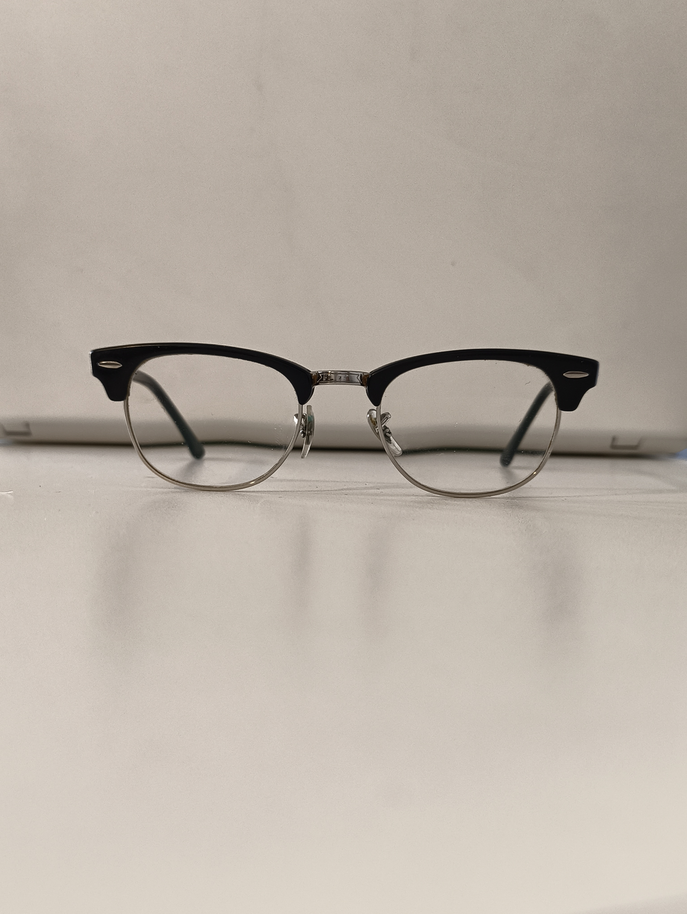
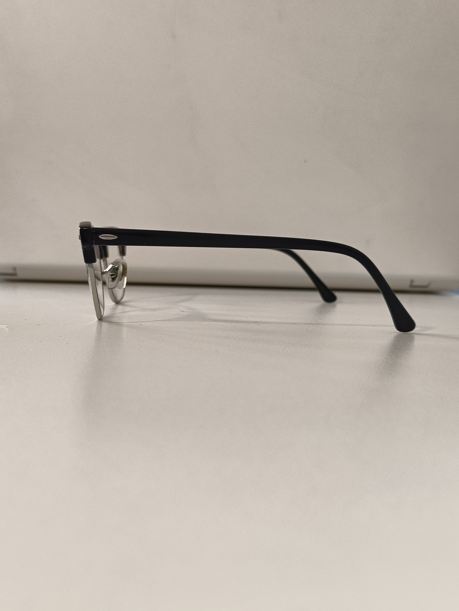
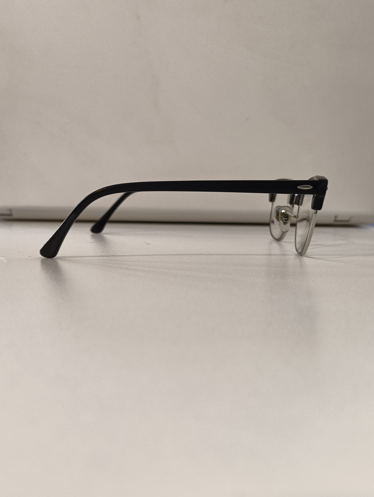
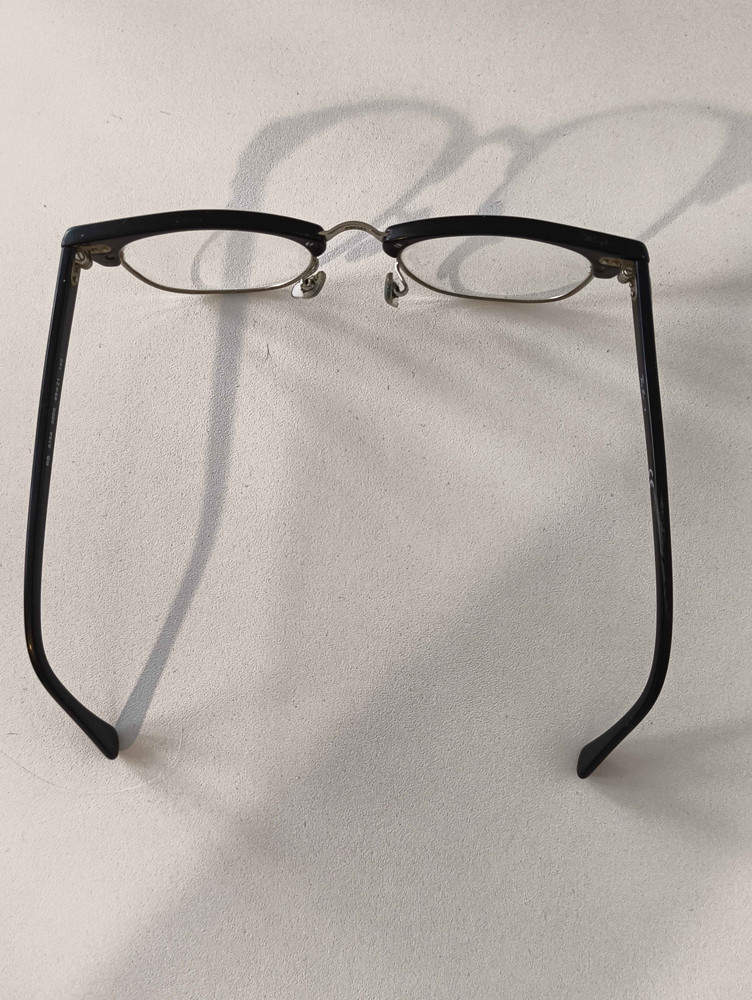
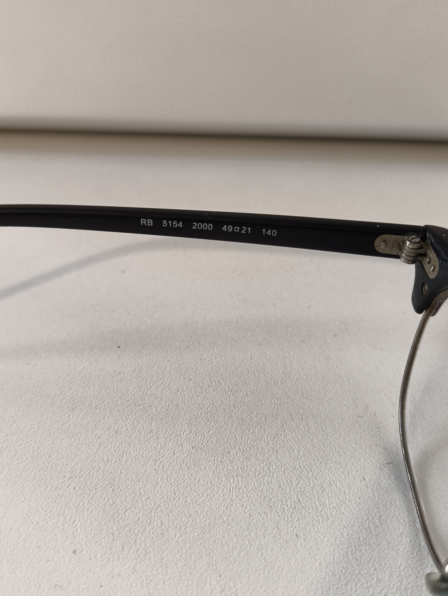

Listing Photo Checklist
Last Updated: June 2026
How to make your frames look like a million bucks (for a fraction of the cost). Buyers can’t try your frames on in person, so your photos are their eyes.
When you create a new listing, our 5 step photo wizard will guide you step by step through the process, but if you’re after more advice then read on.
#1 The "Hero" Shot - The Front View
This is your first impression - make it a great one. Take a straight-on photo of the frames facing forward. The Squinted app takes this photo, automatically removes the background and uses that image for our AR Try On feature. Get this one on the money and your buyers can see what your fantastic frames will look like on them.
- Make sure the frames are level.
- Make sure you can only see the arms of the glasses through the lenses, not from above
- Use a plain, neutral background so the style really pops

Figure 1: Front - the "Hero" Shot
#2 The Left Arm View
Using the same background, keep the frames level and swivel the glasses round 90 degrees to show the left arm of the frames.

Figure 2: Left Arm View
#3 The Right Arm View
Same again, using the same background, keep the frames level and swivel the glasses round 180 degrees to show the right arm of the frames.

Figure 3: Right Arm View
#4 The Top Down View
Take a photo looking down on the whole pair of glasses. This gives your buyers a great impression of the overall condition of your frames.

Figure 4: Top View
#5 The Frame Details
Take a clear, close-up shot of the model numbers and measurements. These will be printed somewhere on one of the arms of the frames - they are often found near the temple end of the arm. (We also have a Frame Measurement help document if you need more info.) The Squinted app reads this info from your photo automatically and if it finds the data will automatically populate your listing with the details it finds. And, more importantly, we add an AI verified badge front and centre of your listing. This gives your listing added authenticity - and gives your buyers confidence.
- Make sure the frame details are crystal clear in the photo to give our AI the best chance of finding your frames

Figure 5: Frame Details View
Other Hints and Tips for Great Photos
- Find the Light
- Skip the flash! Harsh camera flashes create "hot spots" on lenses that make them impossible to see. Place your frames on a flat surface near a window during the day. Natural, indirect light shows the true colour and avoids weird shadows.
- Add extra photos for more detail
- The Squinted app needs the 5 photos from the wizard but you can add more if you want.
- Snap a photo of the hinges and the nose pads. It shows the buyer that the frames are sturdy and well-maintained.
- If there’s a tiny scratch on the lens or a nick on the arm, zoom in on it. It sounds counterintuitive, but showing the flaws builds massive trust. A buyer would rather see a scratch now than be surprised by it later!
- Clean the lenses
- Did you clean the lenses with a microfiber cloth first? Because dust looks like scratches on camera
If you have questions regarding our compliance definitions or structural policies, reach out to the Squinted administration team at support@squinted.co.uk.